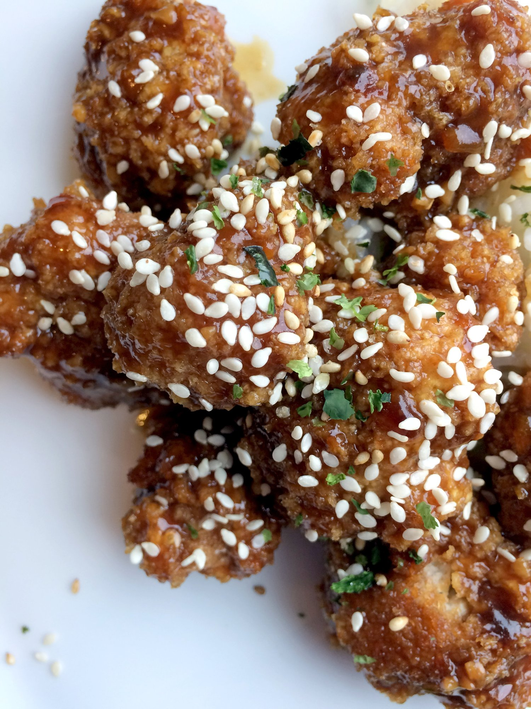
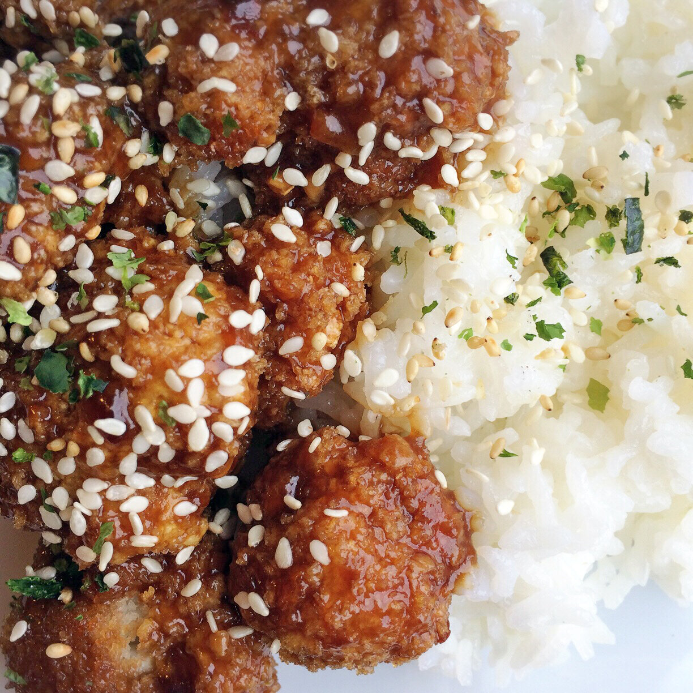
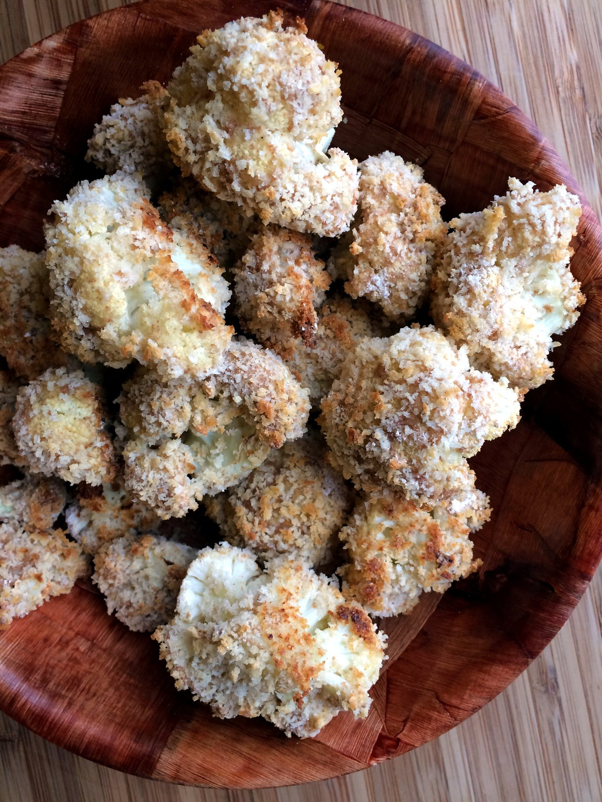
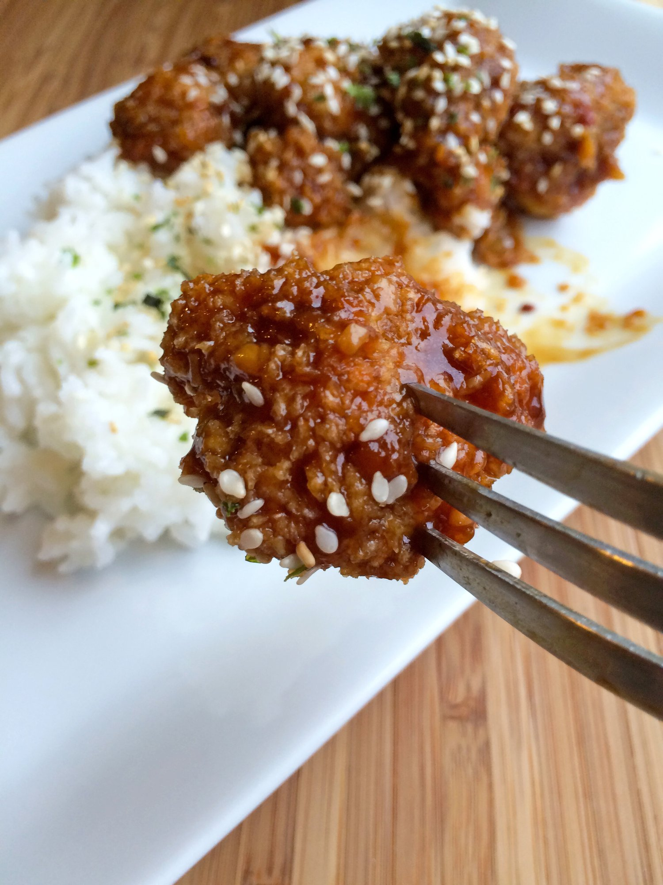

General Tso's Cauliflower (vegan)




This dish made my day todayyyy. This morning I woke up in a really bad mood. Like. Really bad... Last night wasn't the best and ended with my dog being stuck in his own pee for 5 hours and panicking and me getting not much sleep. When I don't get sleep, I get aaaaanGRY. On top of thaaaattt.. I was not very excited for plans I had this morning. Okay so. I moved to Washington almost 3 months ago. Since then, I haven't really made many friends. I mean, Andrew has introduced me to a lot of people, but I really only talk to one of them that I'd call a friend. My day doesn't really require me to make friends, so I just...don't. Places I go: the gym, the Bakehouse, and my own house. With a trip to the grocery store here and there. That's it. That's literally it. I used to make friends at any new gym I went to - but that's because I was at LA Fitness and everyone was my age. As a girl, the friends just sort of come to YOU. Here....not so much. People are not my age and everyone keeps to themselves. So I don't make friends.
The plans this morning were to have a group bike ride so I could meet this other girl who recently moved here. Problem is, as much as I complain about not having friends here and requiring 100% of Andrew's attention at any given moment every day from the time I wake O_O, I don't WANT to make friends. Making friends is hard. You have to speak and like. Work at it and stuff. So much energyyyyy. Then I get pessimistic and think - well, the person won't like me anyways it'll be pointless to put in the effort. And I add in other excuses like - it's cold here now and I don't have winter gear; it's raining; I didn't get much sleep; I don't want to leave my dog all alone; I have to work on LITERALLY ANYTHING ELSE. And then I don't make friends.
It's not so bad when you have social media and you feel so connected to so many people. I can call any of my friends from back home. I can text any of my friends from Instagram. Easy peasy. But when you just need to get out of the house and do something with someone, that's when it sucks.
SO WHAT HAD HAPPENED WAS. I went on the bike ride anyways. AND IT WAS FUNNNN. It wasn't that cold. The rain was actually enjoyable. And I ended up really liking the girl I was introduced to!! We connected well and our level of like - bike-dness? bikedness? bike mastery? I don't know - but basically we ride at similar paces. So it was nice. Moral of the story is: only require like 99% of Andrew's attention and then the other...wait no... hm. You know what I mean.
Then the POST BIKE RIDE YUMMIES HAPPENED. I wasn't kidding when I said I'm trucking through recipes this week! :p Next on the list (after those awesome pumpkin stuffed dough balls) is general tso's cauliflower!!! I was first shown a recipe like this by High Carb Hannah, but ultimately I used this recipe as my reference - the one I made is a lot more saucy & flavorful but I'm biased :p MAKE IT. It's so reallll. Crispy, check. Sweet, check. Spicy, check. SAUCYYY, check. It hits all the high-points of Chinese food. I mean really though, I didn't change a dang thing about this recipe. Maybe tweaked like, 2 things? So I can't really get credit for this amazingness. But I was a nice guinea pig for the recipe and took pictures and yeah. Ish gewwwddddd. It would be GREAT for tofu instead of cauliflower, too. One thing I wonder is how it may be if the cauliflower were slighty steamed first instead of being raw? Who knows!! If you try that, let me know!
General Tso's Cauliflower (vegan)
Serves: 4
Original recipe by Delish Knowledge
-
1 head raw cauliflower, cut into florets
-
1 cup unsweetened almond milk
-
1 cup panko bread crumbs
-
1/2 cup flour (I used spelt; oat or whole wheat would be great)
-
1.5 cups water
-
1/3 cup tamari (or soy sauce)
-
1/4 cup apricot jam (I used sugar free)
-
3 TBSP hoisin
-
2 TBSP cornstarch
-
1 TBSP balsamic vinegar
-
1 TBSP olive oil
-
4 cloves garlic, minced
-
1 TBSP fresh grated ginger
-
¼ tsp red pepper flakes
Preheat the oven to 425 F. Spray a baking sheet with nonstick spray and keep it nearby to the side. In 3 separate bowls, place the almond milk, panko breadcrumbs, and flour. Dip a cauliflower floret into the flour, then the milk, and then the breadcrumbs. Place the cauliflower floret on the baking sheet. Repeat the process for all of your florets, creating a single layer on the baking sheet - do not stack! Bake for 30-35 minutes at 425 F until golden.
In a medium bowl, whisk together the water, tamari (or soy sauce), apricot jam (sugar free worked great), hoisin, cornstarch, and balsamic vinegar. Heat the olive oil in a medium saucepan, then add the garlic, ginger, and red pepper flakes. Cook for 2-3 minutes. Then, pour in the soy sauce mixture, mix, and bring to a boil. Reduce the heat to medium and let simmer until it thickens. This will take 7-10 minutes; the longer it simmers, the thicker it gets.
Remove the cauliflower from the oven. Toss the cauliflower in a bowl and coat completely with the sauce.
Serve with rice and top with sesame seeds! Enjoy!
This makes 4 servings. Nutritional info for one serving: 277 cals; 5 g fat, 51 g carbs (9 g fiber), 10 g protein.